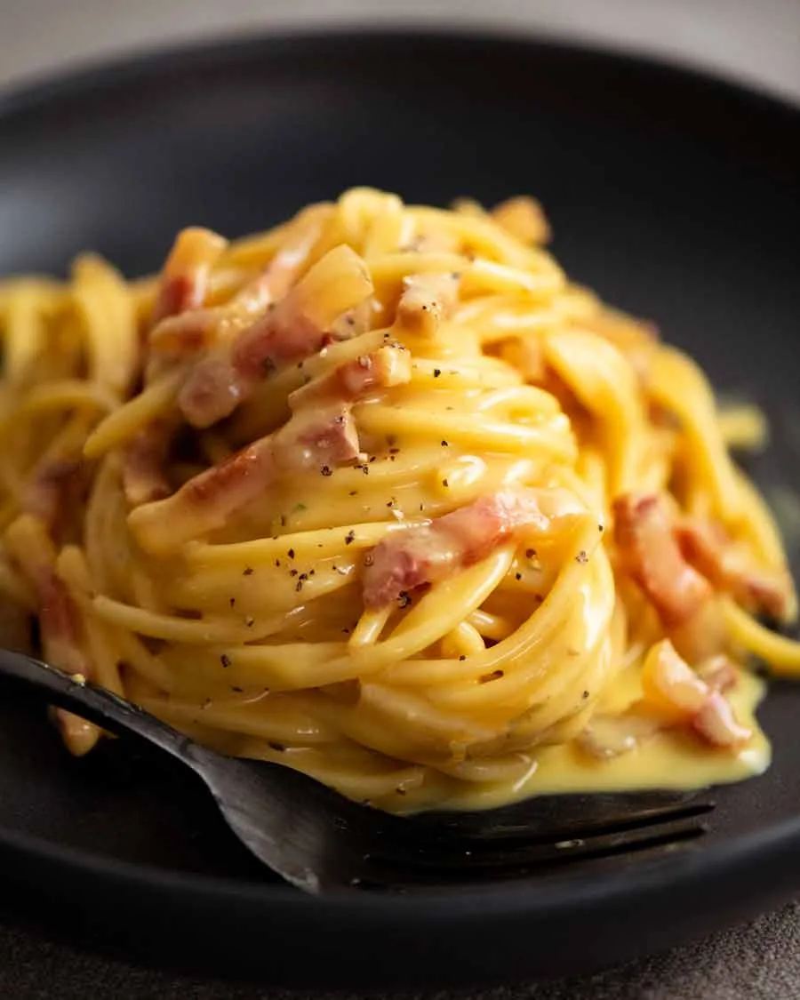

Carbonara

Description
Carbonara is a beautiful, classic Italian pasta that’s so creamy, you’d swear there’s a good amount of cream in it. And indeed, there’s plenty of recipes that cheat by adding in cream.
But today, we’re making spaghetti carbonara properly, the authentic, traditional way. No cream. Just egg, cheese and a splash of starchy pasta cooking water.
Outside of Italy, lots of recipes “cheat” by adding cream into carbonara sauce, for various reasons. Not a bad thing, per se, it’s just that it’s no longer a real carbonara.
But more importantly for me (in addition to, of course, the fact that I’m sharing a recipe with the intention of respecting the origins), cream alters the mouthfeel and flavour. You see, real carbonara is rich and creamy to eat. But you don’t get that slick of dairy fat coating your mouth like you do when eating cream.
Put another way – carbonara is how you get your creamy pasta fix without feeling weighed down like you do when you indulge in pastas doused with heavy cream. Win!
Ingredients
Steps
- Cut the guanciale into thick batons. Biting through the golden brown crust into meaty bits of salty guanciale is part of the awesomeness that is carbonara!
- Finely grate the parmigiana reggiano or pecorino. I use a microplane – one of can’t-live-without kitchenware items!
- Sauce – Whisk together the egg, cheese and pepper in a large bowl. It needs to be a large bowl because the pasta will be stirred into the sauce in the bowl, off the stove, to avoid scrambling the eggs.
- Cook pasta – Bring 4 litres (4 quarts) of water to the boil with 1 tablespoon of salt. Cook the pasta per packet directions. It should be firm, not soft, but fully cooked through.
- Cook guanciale until golden while the pasta is cooking. You don’t need any oil, the guanciale will fry in its own fat.
- Toss pasta in guanciale – Tumble the hot pasta into the pan with the guanciale then toss so the pasta gets coated in the guanciale fat.
- Mix vigorously with the handle of a wooden spoon, spinning the pasta around, for around 30 seconds to 1 minute. Watch as the watery pale yellow liquid magically transforms into a creamy sauce. You know it’s ready when the sauce is no longer watery and pooled in the bottom of the bowl. Instead, it will be thickened, creamy, and clinging to the pasta!
- Serve immediately in warm bowls. Pasta waits for no one!
Home